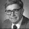

<div class="profile"><div>
  <div class="source">
APL (1957)
  </div>
  <div class="detail">
    
    <div class="search"><a href="http://www.google.com/cse?cx=partner-pub-6997921015773263:4467526896&ie=UTF-8&q=Kenneth E. Iverson" target="_blank"></a> | <a href="http://en.wikipedia.org/wiki/Kenneth_E._Iverson" target="_blank">wiki</a></div>
    <div class="name"><a href="http://webbox.lafayette.edu/~reiterc/j/ke_iverson/" target="_blank">Kenneth E. Iverson</a></div>
    <div class="info"><b>Kenneth Eugene Iverson</b> (17 December 1920 - 19 October 2004) was a Canadian computer scientist noted for the development of the APL programming language in 1962. He was honored with the Turing Award in 1979 for his contributions to mathematical notation and programming language theory. The Iverson Award for contributions to APL was named in his honor.
    <p><b><a href="http://en.wikipedia.org/wiki/APL_(programming_language)" target="_blank">APL</a></b> (named after the book A Programming Language) is an interactive array-oriented language and integrated development environment which is available from a number of commercial and non-commercial vendors and for most computer platforms.[</p>
    </div>
  </div>
  <div class="photo">
    
  </div>
</div></div>